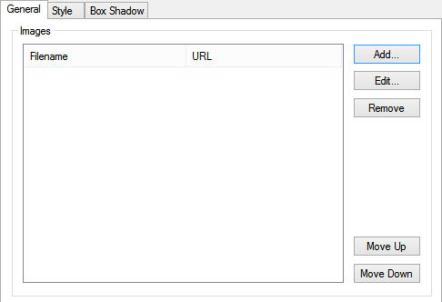
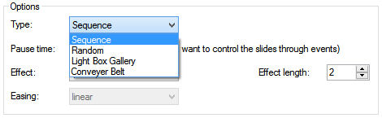
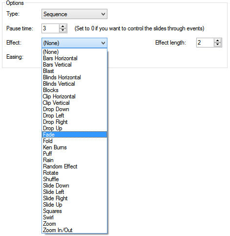
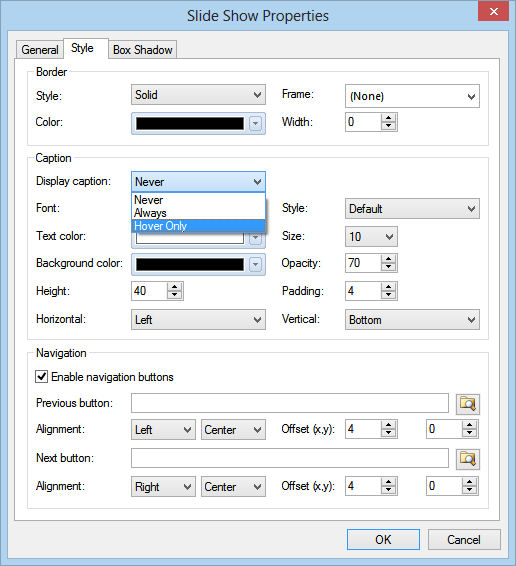
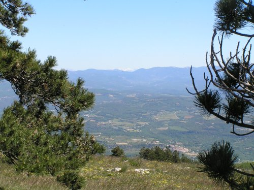
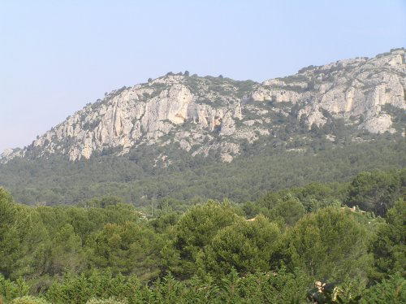
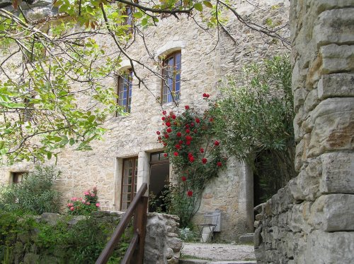
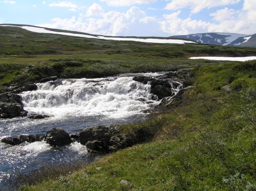
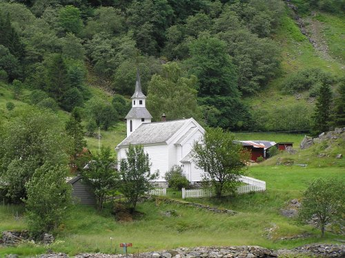

An introduction to the SlideShow
In this article we will give you a quick overview of what you can do with the the built-in slideshow object so you can present your images in an elegant way.
To add the Slide Show to your web site, simply drag & drop the 'Slide Show' object from the Toolbox to the page.
Double click the SlideShow object to open its properties and click 'Add' to add a single image or hold the SHIFT key and then click 'Add' to add multiple images at the same time.
In this article we will give you a quick overview of what you can do with the the built-in slideshow object so you can present your images in an elegant way.
To add the Slide Show to your web site, simply drag & drop the 'Slide Show' object from the Toolbox to the page.
Double click the SlideShow object to open its properties and click 'Add' to add a single image or hold the SHIFT key and then click 'Add' to add multiple images at the same time.
For each image you can associate a title and a link. The title will be used for the tooltip or (if enabled) the caption of the image. The link can point to another page in the current website or an external website. See also the Links tutorial.
There are several SlideShow types you can choose from:
• Sequence
The images will be rotated in sequence.
• Random
The images will be displayed in random order.
• Light Box Gallery
If you select this option then clicking the image will start a lightbox slideshow. You can select one of built-in slideshows: slimbox, prettyphoto, fancybox. To customize the behavior of the lightbox, you can add extra options through the 'Options'. Please consult the documentation or website of the specific lightbox for more details about possible configuration options.
See also this related tutorial for more details about this feature: https://www.wysiwygwebbuilder.tk/lightboxes.html
Additional galleries/lightbox plugins can be downloaded from the download section of the website:
https://www.wysiwygwebbuilder.tk/free_extras.html
• Conveyer Belt
This option creates an image slideshow which scrolls the images from right to left in a "conveyor belt" fashion.
• Sequence
The images will be rotated in sequence.
• Random
The images will be displayed in random order.
• Light Box Gallery
If you select this option then clicking the image will start a lightbox slideshow. You can select one of built-in slideshows: slimbox, prettyphoto, fancybox. To customize the behavior of the lightbox, you can add extra options through the 'Options'. Please consult the documentation or website of the specific lightbox for more details about possible configuration options.
See also this related tutorial for more details about this feature: https://www.wysiwygwebbuilder.tk/lightboxes.html
Additional galleries/lightbox plugins can be downloaded from the download section of the website:
https://www.wysiwygwebbuilder.tk/free_extras.html
• Conveyer Belt
This option creates an image slideshow which scrolls the images from right to left in a "conveyor belt" fashion.
Pause time specifies the number of seconds to pause before displaying the next image in the sequence.
The Effect property specifies the animation that will be used for image transitions. You can choose from more that 25 animation effects!
If you select "Random Effect' then each image will have a different/random animation. Some animations also support easing to create bounce or elastic-like effects.
The Effect property specifies the animation that will be used for image transitions. You can choose from more that 25 animation effects!
If you select "Random Effect' then each image will have a different/random animation. Some animations also support easing to create bounce or elastic-like effects.




The Slide Show has many styling options like border styling, captions, navigation buttons and box shadow.
Here's an example of the Slide Show with the Random Effect using the build-in navigation buttons.
Here's an example of the Slide Show with the Random Effect using the build-in navigation buttons.







First image